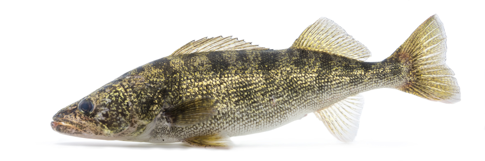

Walleye are the most sought-after table fish in Quebec and one of the most technically rewarding species to target consistently. They don't hit hard, they don't jump, and they often drop the bait if you react too fast — but crack the code on how they relate to light, structure, and season, and walleye fishing becomes one of the most satisfying pursuits in freshwater angling.
The Most Important Factor: Light
Walleye eyes are adapted for low light. The tapetum lucidum — the reflective layer that makes their eyes appear to glow in the dark — gives them a massive vision advantage over prey species at dawn, dusk, and night. This is the foundation of every walleye tactic. The best fishing almost always coincides with low-light windows: the first hour after sunrise, the last hour before dark, overcast days, stained water, and deep structure that blocks sunlight.
On clear-water lakes and the St. Lawrence on bright days, walleye will drop deep into 25 to 40 feet to avoid sunlight entirely. In dark or stained water — like the Mille-Îles or sections of the Ottawa River — walleye may stay shallow all day. Adjust your depth based on water clarity and sky conditions, not just time of day.
Seasonal Breakdown
Spring (April – May)
The spring spawning run is the most concentrated and predictable walleye fishing of the year. Fish move into rivers, river mouths, and gravel shoals to spawn as water temperatures reach 7°C to 10°C. On the St. Lawrence, river sections near Trois-Rivières and the shoals of Lac Saint-François are legendary spring spots. Fish shallow — two to eight feet — using a jig tipped with a minnow drifted through current seams, or a live sucker rig suspended under a slip float. Be patient: spring fish often hold in very specific current lines, a few feet can make all the difference.
Summer (June – August)
Summer walleye go deep during the day and rise in the evening. Depths of 18 to 35 feet over sand, gravel, and rocky structure hold the majority of fish during midday. Night fishing is extremely productive in summer — fish move shallow onto flats and points as the sun goes down. Trolling crankbaits along break lines and weed edges from 10 pm to 2 am is a proven technique on Lac Saint-Louis and the Lac des Deux Montagnes basin.
Fall (September – October)
Fall is a transition period and can produce some of the largest walleye of the year. As water cools below 16°C, fish become more active and feed heavily. They begin moving shallower and becoming less predictable — roaming sand flats, rocky points, and main lake basin edges. Blade baits and jigging spoons produce well in fall, as does vertical jigging over deeper structure. The bite typically runs all day during fall, not just low-light windows.

Top Presentations
Jig & Minnow — The Bread and Butter
A 1/8 to 3/8 oz ball-head jig tipped with a live or fresh-dead minnow is the most versatile walleye setup in existence. Drag it slowly along the bottom, lift-pause-drop, or cast it uptide and let it swing through a current seam. In cold water use smaller jigs and smaller minnows. In warm water bump up to a 3-inch shiner or emerald shiner for better profile. Always use a short fluorocarbon leader — walleye can be leader-shy in clear water.
Soft Plastics on a Jig Head
For anglers who prefer artificial lures, a Berkley Gulp! Minnow or Powerbait paddle tail in 3 to 4 inches rigged on a 1/4 oz jig head is a deadly walleye tool. The scent and action combination is hard to beat during summer. Fish the same lift-pause retrieve as live bait. White, chartreuse, and natural shad colours are consistent producers.
Slip Float Rig
Suspending a live minnow under a slip float is the most effective technique in moving water or when targeting specific depth windows. Set the float to keep your bait six to 18 inches off the bottom, drift it through current seams, and watch for the float to slide sideways rather than dip straight down — walleye often mouth the bait and move laterally before swallowing. Wait a beat before setting the hook.
Night Trolling
Trolling a Rapala Shad Rap or Jointed Rapala J-11 at one to two mph along weed edges in 6 to 14 feet of water from sunset to midnight is one of the most reliable summer tactics on Montreal's bigger lakes. Run the crankbait on a short lead — 40 to 60 feet — so you stay precise on the break. Hit visible points, cuts in weed edges, and the ends of shoals.
"Walleye fishing is an exercise in subtraction. Remove light, reduce retrieve speed, drop closer to the bottom — each adjustment narrows the search."
Gear Setup
A 6.5 to 7-foot medium-light or medium spinning rod with a fast action tip is the standard walleye setup. Pair it with a 2500 to 3000 size reel spooled with 8 to 10 lb braid, then tie on a 2 to 3 foot section of 6 to 8 lb fluorocarbon leader. The braid gives you sensitivity to feel the soft tap of a walleye bite; the fluoro leader disappears in clear water and won't spook fish.
Keep your hooks sharp and small — a size 4 or 6 octopus hook for live bait, a size 1 or 2 for jig heads. Walleye bites are subtle and a dull hook or hook set that's a half-second too early means a lost fish.
Montreal's Best Walleye Spots
The St. Lawrence River from Montreal to Lac Saint-François is the top walleye water in the region. Gravel shoals, channel edges, and river points hold fish throughout the season. Lac des Deux Montagnes produces consistent walleye on its deeper basin edges and incoming river tributaries. The Mille-Îles is underrated for walleye, especially in spring near its river mouths. For a deeper dive on reading structure and finding walleye, see our dedicated article on how to locate walleye in Quebec.

20+ years fishing Quebec's freshwater systems. Kayak angler, catch-and-release advocate, and founder of Sub Urban Anglers.
Read More About Me